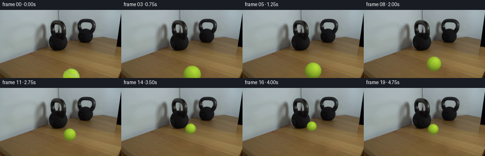
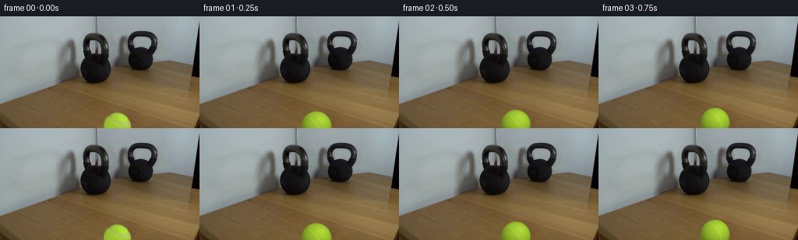

CODING AGENTS AS PIXEL WORLD MODELS
traex/GPT-5.6-Sol · 0155
点击播放 · 原生 RGB 像素
逐轮保存的候选
回放视频、检查图与代码变化。
每份候选均可单独播放。实际图片检查记录在下方工具轨迹中。
候选 01播放与检查图
点击播放 · 原生 RGB 像素


展开代码变化
--- 上一保存版本
+++ 本次保存版本
@@ -0,0 +1,223 @@
+"""Generate the requested locked-off kettlebell / rolling tennis ball clip.
+
+The photographed setup is kept verbatim. Only the tennis ball is removed from
+the clean plate and re-rendered as it rolls away from camera toward the heavy
+kettlebell. All rendering is deterministic and uses local numeric operations.
+"""
+
+from pathlib import Path
+
+import cv2
+import numpy as np
+from PIL import Image
+
+import artifact_io
+
+
+W, H = 256, 144
+N_FRAMES = 20
+SS = 4 # supersampling for the small, high-contrast tennis-ball silhouette
+
+
+def make_clean_plate(first: np.ndarray) -> np.ndarray:
+ """Remove the partly cropped foreground ball with row-wise wood synthesis.
+
+ The table in this area is nearly horizontal-grained. Interpolating between
+ the untouched pixels immediately to either side preserves its changing
+ colour and grain at every row and avoids an inpainting seam at the image's
+ lower boundary.
+ """
+ plate = first.astype(np.float32).copy()
+ cx, cy, radius = 150.0, 143.0, 21.0
+
+ yy, xx = np.mgrid[0:H, 0:W]
+ # Include the green antialias fringe and a very small surrounding margin.
+ mask = (xx - cx) ** 2 + (yy - cy) ** 2 <= radius**2
+ mask &= yy >= 120
+
+ for y in range(120, H):
+ xs = np.flatnonzero(mask[y])
+ if not len(xs):
+ continue
+ left, right = int(xs[0]), int(xs[-1])
+
+ # Robust local endpoint colours. The narrow bands retain row-specific
+ # wood grain while medians reject isolated compression/noise pixels.
+ c0 = np.median(first[y, max(0, left - 5) : left - 1], axis=0)
+ c1 = np.median(first[y, right + 2 : min(W, right + 6)], axis=0)
+ width = right - left + 1
+ t = np.linspace(0.0, 1.0, width, dtype=np.float32)[:, None]
+ row = c0[None, :] * (1.0 - t) + c1[None, :] * t
+
+ # Low-amplitude grain copied from both clean margins, tapered smoothly.
+ lband = first[y, max(0, left - 9) : left - 1].astype(np.float32)
+ rband = first[y, right + 2 : min(W, right + 10)].astype(np.float32)
+ if len(lband) and len(rband):
+ lres = lband - lband.mean(axis=0, keepdims=True)
+ rres = rband - rband.mean(axis=0, keepdims=True)
+ phase = np.arange(width)
+ grain = (
+ lres[phase % len(lres)] * (1.0 - t)
+ + rres[phase % len(rres)] * t
+ )
+ row += 0.32 * grain
+ plate[y, left : right + 1] = row
+
+ # Feather only the synthesized boundary by blending a mildly smoothed copy.
+ soft = cv2.GaussianBlur(mask.astype(np.float32), (0, 0), 1.15)
+ core = cv2.erode(mask.astype(np.uint8), np.ones((3, 3), np.uint8)).astype(bool)
+ smooth_plate = cv2.GaussianBlur(plate, (0, 0), 0.48)
+ edge_mix = np.clip(soft - core.astype(np.float32), 0.0, 1.0)[..., None]
+ plate = plate * (1.0 - 0.28 * edge_mix) + smooth_plate * (0.28 * edge_mix)
+ return np.clip(plate, 0, 255).astype(np.uint8)
+
+
+def alpha_over(dst: np.ndarray, rgb: np.ndarray, alpha: np.ndarray) -> np.ndarray:
+ """Float alpha composite into an RGB uint8 image."""
+ a = np.clip(alpha, 0.0, 1.0)[..., None]
+ out = dst.astype(np.float32) * (1.0 - a) + rgb.astype(np.float32) * a
+ return np.clip(out + 0.5, 0, 255).astype(np.uint8)
+
+
+def add_shadow(frame: np.ndarray, cx: float, cy: float, r: float, strength: float) -> np.ndarray:
+ """Render the soft contact/cast shadow on the wooden table."""
+ hs, ws = H * SS, W * SS
+ yy, xx = np.mgrid[0:hs, 0:ws].astype(np.float32)
+ x = xx / SS + 0.5 / SS
+ y = yy / SS + 0.5 / SS
+
+ # The key light comes from upper right. Most of this ellipse is hidden by
+ # the ball, leaving a natural contact crescent at lower-left.
+ sx = cx - 1.8 * (r / 19.5)
+ sy = cy + 0.62 * r
+ ax, ay = 1.03 * r, 0.32 * r
+ d2 = ((x - sx) / ax) ** 2 + ((y - sy) / ay) ** 2
+ sh = np.exp(-2.15 * d2) * (d2 < 3.5) * strength
+ sh = cv2.resize(sh, (W, H), interpolation=cv2.INTER_AREA)
+ # A neutral-warm multiplicative shadow retains the table texture.
+ mult = 1.0 - sh[..., None] * np.array([0.34, 0.32, 0.27], np.float32)
+ return np.clip(frame.astype(np.float32) * mult, 0, 255).astype(np.uint8)
+
+
+def render_ball(
+ frame: np.ndarray,
+ cx: float,
+ cy: float,
+ radius: float,
+ rotation: float,
+ squash: float = 1.0,
+) -> np.ndarray:
+ """Analytically render a fuzzy chartreuse tennis ball on the clean plate."""
+ # Shadow is separate from the sphere so texture and reflected table colour
+ # remain visible through its soft penumbra.
+ frame = add_shadow(frame, cx, cy, radius, strength=0.25)
+
+ hs, ws = H * SS, W * SS
+ yy, xx = np.mgrid[0:hs, 0:ws].astype(np.float32)
+ px = xx / SS + 0.5 / SS
+ py = yy / SS + 0.5 / SS
+ rx = radius * squash
+ ry = radius / np.sqrt(squash)
+ nx = (px - cx) / rx
+ ny = (py - cy) / ry
+ rr = nx * nx + ny * ny
+ inside = rr <= 1.0
+ nz = np.sqrt(np.maximum(0.0, 1.0 - rr))
+
+ # Directional studio/window illumination. The existing ball has its broad
+ # highlight on the upper-right and a warmer, darker lower hemisphere.
+ light = np.array([0.34, -0.47, 0.815], dtype=np.float32)
+ lambert = np.maximum(0.0, nx * light[0] + ny * light[1] + nz * light[2])
+ shade = 0.67 + 0.43 * lambert
+ shade *= 0.97 - 0.055 * np.maximum(ny, 0.0)
+
+ base = np.empty((hs, ws, 3), np.float32)
+ albedo = np.array([155.0, 194.0, 45.0], np.float32)
+ base[:] = albedo
+ base *= shade[..., None]
+
+ # Material coordinates rotate around a screen-horizontal axle. Procedural
+ # fuzz and the seam therefore remain attached to the rolling sphere.
+ ct, st = np.cos(rotation), np.sin(rotation)
+ mx = nx
+ my = ct * ny + st * nz
+ mz = -st * ny + ct * nz
+
+ # Tennis-ball curved seam: a softly raised, pale closed wave on the sphere.
+ phi = np.arctan2(my, mz)
+ seam_dist = np.abs(mx - 0.43 * np.sin(2.0 * phi))
+ seam = np.exp(-((seam_dist / 0.052) ** 2)) * inside
+ seam_col = np.array([188.0, 211.0, 91.0], np.float32)
+ seam_amount = (0.43 * seam)[..., None]
+ base = base * (1.0 - seam_amount) + seam_col * shade[..., None] * seam_amount
+
+ # Fine deterministic felt variation, evaluated in material coordinates.
+ fuzz = (
+ np.sin(43.0 * mx + 19.0 * my - 11.0 * mz)
+ + 0.62 * np.sin(71.0 * my + 23.0 * mz + 5.0 * mx)
+ + 0.34 * np.sin(109.0 * mz - 37.0 * mx)
+ )
+ base += fuzz[..., None] * np.array([1.35, 1.65, 0.75], np.float32)
+
+ # Small broad specular lift, deliberately weak on matte tennis felt.
+ spec = np.power(np.maximum(lambert, 0.0), 13.0) * 10.0
+ base += spec[..., None] * np.array([1.0, 1.0, 0.72], np.float32)
+
+ # Subpixel antialias and a minuscule fuzzy halo at the silhouette.
+ signed = (1.0 - np.sqrt(np.maximum(rr, 1e-8))) * min(rx, ry)
+ alpha_hi = np.clip(signed * 2.4 + 0.55, 0.0, 1.0)
+ alpha_hi += 0.10 * np.exp(-((signed + 0.20) / 0.48) ** 2) * (signed < 0.0)
+ alpha_hi = np.clip(alpha_hi, 0.0, 1.0)
+
+ rgb = cv2.resize(np.clip(base, 0, 255), (W, H), interpolation=cv2.INTER_AREA)
+ alpha = cv2.resize(alpha_hi, (W, H), interpolation=cv2.INTER_AREA)
+ return alpha_over(frame, rgb, alpha)
+
+
+def trajectory(index: int) -> tuple[float, float, float, float, float]:
+ """Return center, apparent radius, material rotation and collision squash."""
+ # Contact is reached at frame 17 (4.25 s). Constant physical speed recedes
+ # gently in image space; perspective shrinks the apparent sphere from 19.5
+ # pixels in the foreground to 10.1 pixels beside the kettlebell.
+ if index <= 17:
+ p = index / 17.0
+ # A nearly linear screen path reads as a slow controlled roll. Smooth
+ # endpoints prevent a start jerk while retaining motion at frame 01.
+ q = p * p * (3.0 - 2.0 * p)
+ q = 0.22 * p + 0.78 * q
+ cx = 150.0 - 4.0 * q
+ cy = 143.0 - 63.0 * q
+ radius = 19.5 - 9.4 * q
+ # Integrated rolling angle approximation, about three quarters turn.
+ rotation = 4.55 * q
+ squash = 0.94 if index == 17 else 1.0
+ else:
+ # The 30 lb kettlebell is effectively immovable. Elastic tennis-ball
+ # deformation resolves into a small backwards rebound over the last
+ # half-second rather than moving the weight.
+ rebound = {18: (146.25, 83.4, 10.55, 4.36, 1.025),
+ 19: (146.65, 87.4, 11.12, 4.08, 1.0)}
+ cx, cy, radius, rotation, squash = rebound[index]
+ return cx, cy, radius, rotation, squash
+
+
+def generate() -> np.ndarray:
+ case_dir = Path(__file__).resolve().parent
+ first = np.asarray(Image.open(case_dir / "first_frame.png").convert("RGB"))
+ assert first.shape == (H, W, 3)
+ clean = make_clean_plate(first)
+
+ frames = [first.copy()] # strict contract: frame 00 is pixel-identical
+ for i in range(1, N_FRAMES):
+ cx, cy, radius, rotation, squash = trajectory(i)
+ frames.append(render_ball(clean.copy(), cx, cy, radius, rotation, squash))
+ result = np.stack(frames).astype(np.uint8)
+ assert result.shape == (N_FRAMES, H, W, 3)
+ assert np.array_equal(result[0], first)
+ return result
+
+
+if __name__ == "__main__":
+ directory = Path(__file__).resolve().parent
+ artifact_io.save(generate(), directory)
+
可观测工具轨迹
实际执行的命令与返回图片。
命令 1exit 0
/bin/bash -lc "cat prompt.txt && printf '\\n--- GENERATION RULES ---\\n' && cat GENERATION_RULES.md"
命令 2exit 1
/bin/bash -lc "find . -maxdepth 2 -type f -printf '%p\\n' | sort && printf '\\n--- tools ---\\n' && command -v ffmpeg && command -v ffprobe && python3 - <<'PY'
from PIL import Image
im=Image.open('first_frame.png')
print(im.mode, im.size)
PY"命令 3exit 0
/bin/bash -lc "python3 - <<'PY'
from PIL import Image
import numpy as np
im=np.asarray(Image.open('first_frame.png').convert('RGB'))
print('shape',im.shape,'dtype',im.dtype)
print('mins',im.reshape(-1,3).min(0),'maxs',im.reshape(-1,3).max(0),'means',im.reshape(-1,3).mean(0))
# row/column means and luminance ranges
lum=im.mean(2)
for y in range(0,144,8): print('row',y, np.round(im[y].mean(0),1), 'lum range',lum[y].min(),lum[y].max())
PY"命令 4exit 0
/bin/bash -lc "cat artifact_io.py && printf '\\nffmpeg: '; command -v ffmpeg || true; printf 'ffprobe: '; command -v ffprobe || true; python3 - <<'PY'
try:
import cv2; print('cv2',cv2.__version__)
except Exception as e: print('no cv2',e)
from PIL import Image
print('Pillow OK',Image.open('first_frame.png').mode,Image.open('first_frame.png').size)
PY"命令 5exit 0
/bin/bash -lc "python3 - <<'PY'
import cv2, numpy as np
im=cv2.imread('first_frame.png'); hsv=cv2.cvtColor(im,cv2.COLOR_BGR2HSV)
# Report hue bins among saturated pixels
for lo in range(0,180,10):
m=(hsv[:,:,0]>=lo)&(hsv[:,:,0]<lo+10)&(hsv[:,:,1]>40)
if m.sum():
ys,xs=np.where(m); print(lo,lo+9,m.sum(),'bbox',xs.min(),ys.min(),xs.max(),ys.max(),'mean BGR',im[m].mean(0).round(1))
# green candidate connected comps broad
for name,m in [('green',(hsv[:,:,0]>25)&(hsv[:,:,0]<70)&(hsv[:,:,1]>35)&(hsv[:,:,2]>45)),('brightgreen',(hsv[:,:,0]>25)&(hsv[:,:,0]<70)&(hsv[:,:,1]>60)&(hsv[:,:,2]>90)),('dark',(hsv[:,:,2]<45))]:
n,l,st,cen=cv2.connectedComponentsWithStats(m.astype('uint8'),8)
print('\\n',name,m.sum())
for i in np.argsort(st[1:,4])[::-1][:15]+1:
x,y,w,h,a=st[i]; print(a,(x,y,w,h),cen[i].round(1))
PY"命令 6exit 0
/bin/bash -lc "python3 - <<'PY'
import cv2,numpy as np
im=cv2.imread('first_frame.png'); g=cv2.cvtColor(im,cv2.COLOR_BGR2GRAY)
# edge density bounding / columns rows
ed=cv2.Canny(g,40,100)
print('strong edge cols')
for x in np.argsort(ed.sum(0))[::-1][:30]: print(x,int(ed[:,x].sum()/255))
print('strong edge rows')
for y in np.argsort(ed.sum(1))[::-1][:20]: print(y,int(ed[y].sum()/255))
# mean rgb by coarse spatial blocks
rgb=im[:,:,::-1]
for y in range(0,144,12):
print('y',y, ['%3d/%3d/%3d'%tuple(rgb[y:y+12,x:x+16].mean((0,1)).astype(int)) for x in range(0,256,16)])
PY"命令 7exit 0
/bin/bash -lc "python3 - <<'PY'
import cv2,numpy as np
im=cv2.imread('first_frame.png'); hsv=cv2.cvtColor(im,cv2.COLOR_BGR2HSV)
m=(hsv[:,:,0]>25)&(hsv[:,:,0]<70)&(hsv[:,:,1]>35)&(hsv[:,:,2]>45)
for y in range(118,144):
xs=np.where(m[y])[0]
if len(xs): print(y, xs.min(),xs.max(),len(xs), 'center',xs.mean())
PY
printf '\\nDark spans by row (<45 V):\\n'
python3 - <<'PY'
import cv2,numpy as np
im=cv2.imread('first_frame.png'); hsv=cv2.cvtColor(im,cv2.COLOR_BGR2HSV)
m=hsv[:,:,2]<45
for y in range(8,95,2):
xs=np.where(m[y])[0]
# runs
if len(xs):
br=np.r_[0,np.where(np.diff(xs)>1)[0]+1,len(xs)]
runs=[(int(xs[a]),int(xs[b-1])) for a,b in zip(br[:-1],br[1:]) if b-a>=2]
if runs: print(y,runs)
PY"命令 8exit 0
/bin/bash -lc "python3 - <<'PY'
import cv2,numpy as np
im=cv2.imread('first_frame.png'); hsv=cv2.cvtColor(im,cv2.COLOR_BGR2HSV); g=cv2.cvtColor(im,cv2.COLOR_BGR2GRAY)
# ascii every 2x2 region x70..220 y10..100 based intensity; uppercase green
chars='@%#*+=-:. '
for y in range(10,144,3):
s=''
for x in range(60,230,3):
v=g[y:y+3,x:x+3].mean(); sat=hsv[y:y+3,x:x+3,1].mean(); hue=hsv[y:y+3,x:x+3,0].mean()
c=chars[min(9,int(v/256*10))]
if 25<hue<70 and sat>50: c='G'
s+=c
print(f'{y:03d} '+s)
PY"命令 9exit 0
/bin/bash -lc "python3 - <<'PY'
from PIL import Image
import numpy as np
im=np.array(Image.open('first_frame.png'))
for y in range(122,144,2):
print('\\ny',y)
for x in range(130,171,2):
r,g,b=im[y:y+2,x:x+2].mean((0,1)).astype(int)
if g>r*1.08 and g>b*1.5: c='G'
elif g>r and g>b*1.25: c='g'
else:c='.'
print(c,end='')
print()
# colors green pixels quantiles
R,G,B=im[:,:,0],im[:,:,1],im[:,:,2]
m=(G>R*1.08)&(G>B*1.5)&(G>80)&(np.indices(G.shape)[0]>115)
for q in [0,10,25,50,75,90,100]:print(q,np.percentile(im[m],q,axis=0))
PY"命令 10exit 0
/bin/bash -lc "python3 - <<'PY'
import cv2,numpy as np
im=cv2.imread('first_frame.png'); hsv=cv2.cvtColor(im,cv2.COLOR_BGR2HSV)
# Print dominant color per pixel as chars crop ball each pixel
for y in range(120,144):
s=''
for x in range(128,173):
h,sa,v=hsv[y,x]
if 25<h<70 and sa>80 and v>100: c='G' if v>180 else 'g'
elif 25<h<70 and sa>40: c='o'
elif v<80:c='x'
elif v<130:c='-'
else:c='.'
s+=c
print(f'{y:03d} {s}')
PY"命令 11exit 0
/bin/bash -lc "python3 - <<'PY'
from PIL import Image
import numpy as np
im=np.array(Image.open('first_frame.png')); R,G,B=im.transpose(2,0,1)
m=(G>R*1.05)&(G>B*1.4)&(G>100)
for y in range(124,144):
mm=m[y]
if mm.sum(): print(y,mm.sum(),im[y,mm].mean(0).round(1), im[y,mm].min(0), im[y,mm].max(0))
PY"命令 12exit 0
/bin/bash -lc "python3 - <<'PY'
from PIL import Image
import numpy as np
im=np.array(Image.open('first_frame.png'))
chars=' .:-=+*#%@'
for y in range(123,144):
s=''
for x in range(130,171):
r,g,b=im[y,x]
# use brightness within green, non-green blank
if g>r*1.03 and g>b*1.35:
v=int(np.clip((g-130)/100*9,0,9)); s+=chars[v]
else:s+=' '
print(f'{y:03d}|{s}|')
PY"命令 13exit 0
/bin/bash -lc "python3 generate.py && python3 - <<'PY'
import numpy as np
from PIL import Image
z=np.load('pixels.npz')['pixels']
first=np.array(Image.open('first_frame.png')).astype(np.uint32)
p=(first[:,:,0]<<16)|(first[:,:,1]<<8)|first[:,:,2]
print('pixels',z.shape,z.dtype,'frame0 exact',np.array_equal(z[:,:,0],p))
for i in range(20):
a=np.array(Image.open(f'frames/{i:02d}.png'))
if i:
b=np.array(Image.open(f'frames/{i-1:02d}.png'))
d=np.abs(a.astype(int)-b.astype(int)); print(i,'changed',np.any(a"'!=b,2).sum(),'"'MAE',d.mean().round(3),'max',d.max())
PY"命令 14exit 0
/bin/bash -lc "python3 - <<'PY'
import cv2, numpy as np
from PIL import Image
for i in range(20):
a=np.array(Image.open(f'frames/{i:02d}.png'))
R,G,B=a.transpose(2,0,1)
m=(G>R*1.08)&(G>B*1.50)&(G>85)
n,l,st,cen=cv2.connectedComponentsWithStats(m.astype('uint8'),8)
if n>1:
j=1+np.argmax(st[1:,4]); x,y,w,h,A=st[j]
print(f'{i:02d}: centroid=({cen[j,0]:6.2f},{cen[j,1]:6.2f}) bbox=({x:3d},{y:3d},{w:2d},{h:2d}) green_px={A:4d}')
PY"命令 15exit 0
/bin/bash -lc "python3 - <<'PY'
from pathlib import Path
from PIL import Image
import numpy as np, json
files=sorted(Path('frames').glob('*.png'))
print('frame count',len(files))
arr=np.stack([np.asarray(Image.open(p)) for p in files])
print('tensor',arr.shape,arr.dtype,'range',arr.min(),arr.max())
print('first exact',np.array_equal(arr[0],np.asarray(Image.open('first_frame.png').convert('RGB'))))
print('outputs',[(p.name,p.stat().st_size) for p in [Path('pixels.npz'),Path('inspection.png'),Path('transition_check.png'),Path('index.html')]])
print('index caption present',Path('prompt.txt').read_text().strip() in Path('index.html').read_text())
print('generate syntax and imports OK')
import generate
regen=generate.generate()
print('deterministic saved==regen',np.array_equal(arr,regen))
PY"保存候选 1 份；完成命令 15 次；可验证图片返回 0 张。原始 API 响应与完整日志保留在本地。